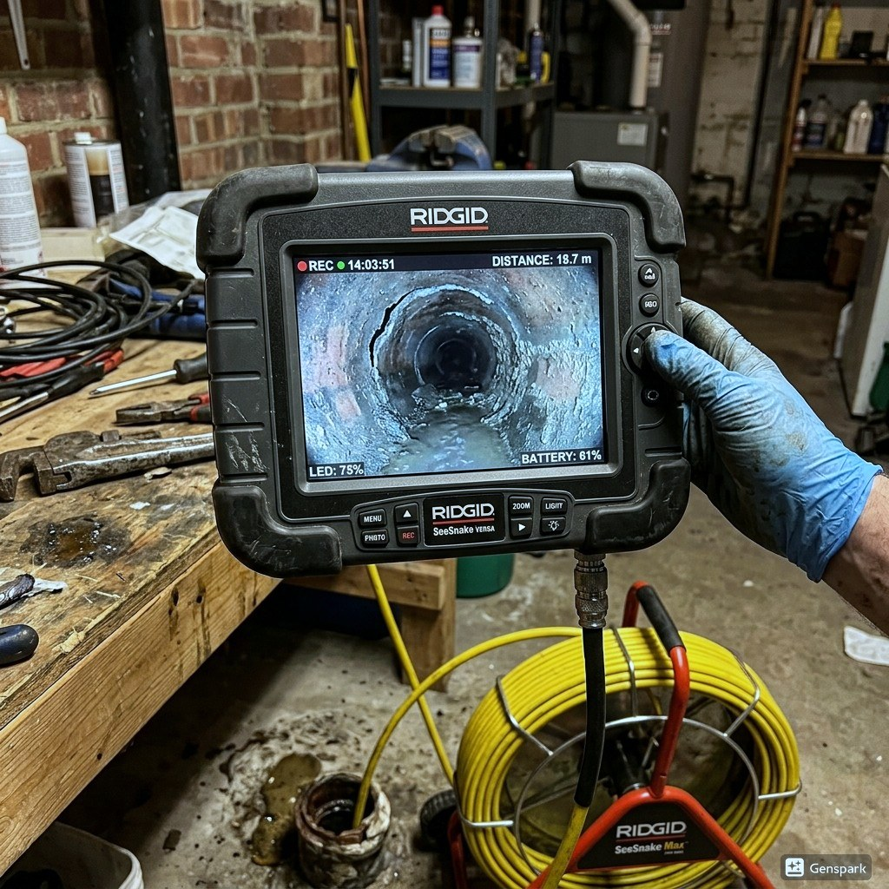
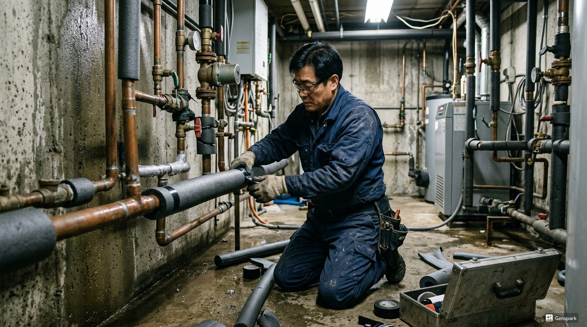

오산 배관누수 원인과 해결
오산의 배관누수 문제는 다양한 원인으로 발생합니다. 1980년대 신도시. 저층 주택과 아파트 혼재. 반도체 산업 지역으로 공장 배수 많음 제우스시설관리는 오산 지역의 특성을 고려하여 최적의 해결책을 제공합니다.

▲ 오산 현장에서 전문 장비로 배관누수 해결 작업 중
제우스시설관리는 배관누수 문제를 해결하기 위해 최첨단 전문 장비를 갖추고 있습니다. 드레인 기계로 막힘을 물리적으로 제거하고, 관로 내시경 카메라로 정확한 원인을 파악하며, 고압세척기로 배관 내부를 완벽하게 청소합니다. 오산 전역에 서비스 인력을 배치하여 28분 내 출동 가능합니다.

▲ 전문 장비를 이용한 배관누수 해결 작업
오산 배관누수 해결 방법
오산에서 배관누수가 발생하는 주요 원인 중 하나는 '배관 노후화로 인한 부식'입니다. 이는 오산의 지리적 특성과 도시 구조로 인한 자연스러운 결과입니다. 문제를 방치하면 더 큰 배관 손상으로 이어질 수 있으므로, 초기 증상이 보일 때 즉시 전문가 상담을 받는 것이 중요합니다.
제우스시설관리 전문 장비
✅ 드레인 기계 - 스프링 와이어로 배관 내 이물질을 물리적으로 파쇄·제거
✅ 관로 내시경 카메라 - 배관 내부를 실시간 영상으로 확인하여 정확한 진단
✅ 고압세척기 - 최대 200bar 고압수로 배관 내벽 오염물 완벽 세척
✅ 관로탐지기 - 매설 배관의 위치와 깊이를 정확히 탐지

▲ 제우스시설관리의 최첨단 장비로 신속하고 정확하게 처리
오산 서비스 지역
오산 전 지역에 28분 내 출동합니다. 야간·주말·공휴일 추가 요금 없이 동일한 서비스를 제공합니다.
오산에서 배관누수 문제를 경험하고 계신가요? 제우스시설관리는 24시간 긴급 대응, 출장비 무료, 문제 미해결시 비용 0원의 정책으로 오산 주민들의 신뢰를 얻고 있습니다. 전문 기술자들이 정확한 원인 파악 후 맞춤형 해결책을 제시합니다.
오산 배관누수 전문가 조언
제우스시설관리는 서울·경기·인천 전 지역에서 24시간 긴급 출동 서비스를 제공합니다. 출장비 무료, 미해결 시 비용 0원이라는 파격적인 정책으로 고객 부담을 최소화합니다.
숙련된 전문 기술자가 최첨단 장비(드레인 기계, 관로 내시경 카메라, 고압세척기, 관로탐지기)를 직접 가지고 출동하여 현장에서 즉시 문제를 해결합니다.
오산 배관누수 자주 묻는 질문
Q. 오산 지역 - 눈에 보이지 않는 누수도 찾을 수 있나요?
A. 관로탐지기와 음향탐지 장비로 매립 배관의 누수 위치를 정밀하게 탐지합니다. 벽이나 바닥을 뜯지 않고도 누수 지점을 찾을 수 있어 불필요한 공사를 방지합니다.
Q. 오산 지역 - 배관 누수를 방치하면 어떻게 되나요?
A. 수도요금 급증, 벽/바닥 곰팡이 발생, 건물 구조체 손상, 층간 누수 분쟁 등 심각한 문제로 확대됩니다. 초기에 발견하여 수리하는 것이 비용과 피해를 최소화하는 방법입니다.
Q. 오산 지역 - 누수 수리 후 재발 가능성은?
A. 원인을 정확히 파악하고 적절한 방법으로 수리하면 재발률은 매우 낮습니다. 배관 노후가 원인인 경우 해당 구간 교체를 권장하며, 수리 후 누수 보증을 제공합니다.